"PASSO A PASSO COMO INSTALA WINDOWS 10"
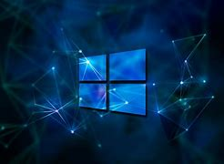- verificar se a arquitetura do seu computador é 64x ou 86x bits
Abra a pagina arquivos, vai em computador com mouse em cima click com lado esquedo do mouse vai em propriedades la voce vai ver se é 64x ou 86x bits. 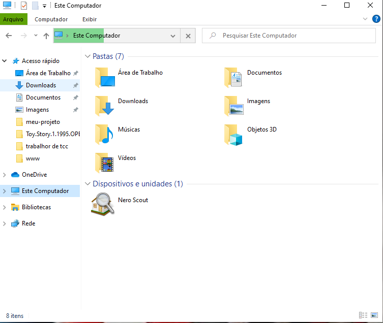 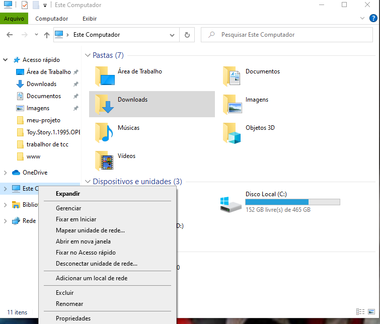 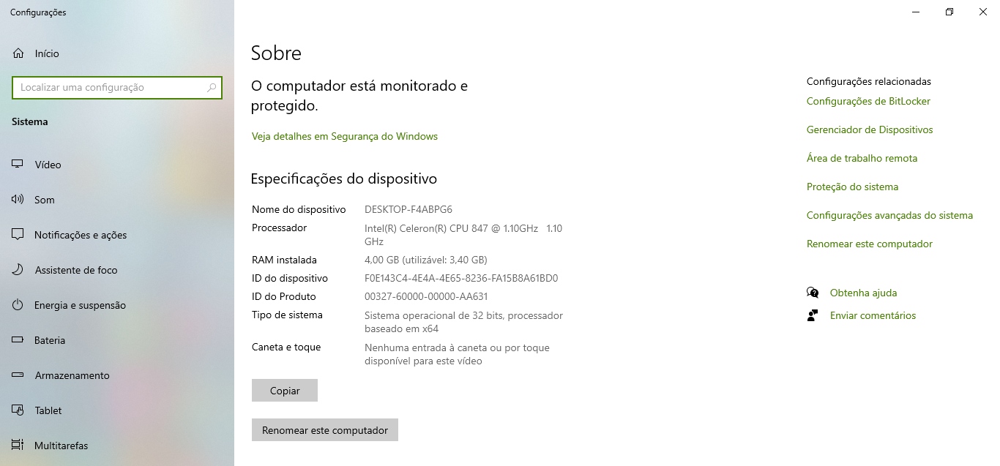
- Download da Ferramenta para fazer a instalação
Va no navegador escrevar download windows 10 logo em baixa vai ter a ferraenta para fazer o download , click aqui e faça o download baixa windows 10 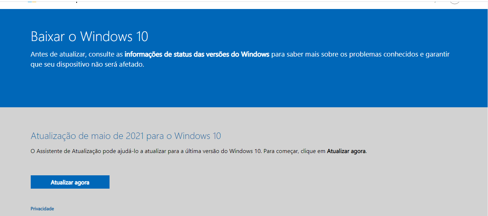

- boot do pendrive
abra a ferramenta MediaCreationTool21H1.exe que voce baixou aceite os termos de uso ,depois selecione criar midia de instalação click em avança, selecione a arquitetura do seu computador na escolha da midia voce tem multipla escolha ou com pendrive no minimo 8g (unidade flash ubs) ou pelo dvd virgem (arquivo iso) depois de selecionado click avança o download sera feito e vai da boot em sua unidade agora so aguarda. 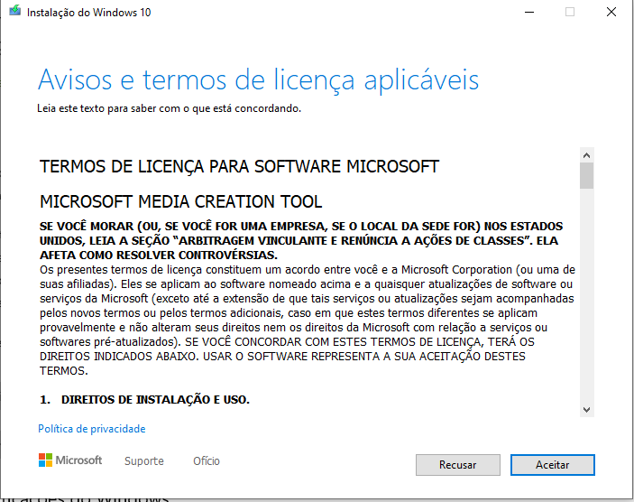 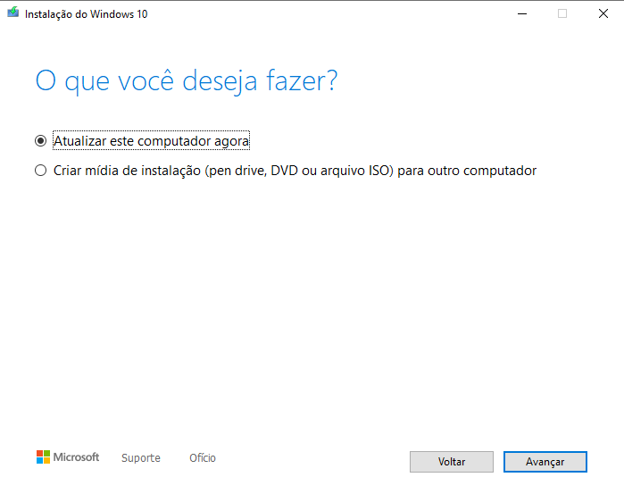 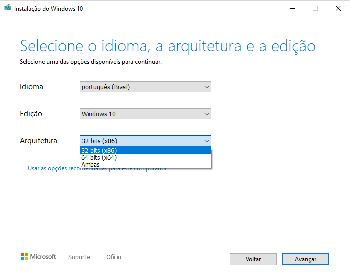
 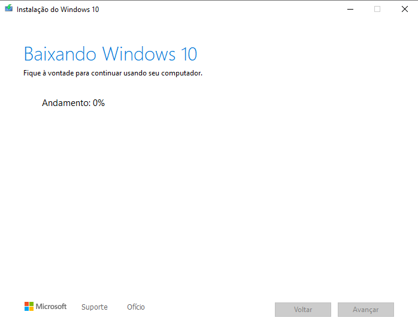
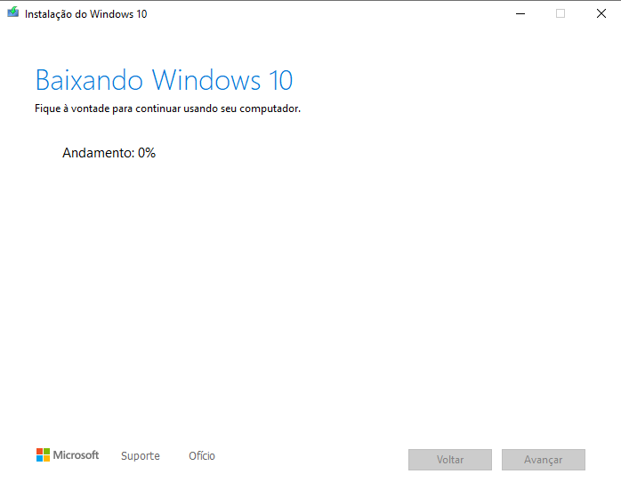
- configura a bios
desligue seu computador agora ligue e aperte f2 vai depende da configuração da bios
tem bios com (f2,f12 ou del), vai abrir a pagina inicial da basicos
como a seta do teclado por lado direito va em advanced desca e selecione OS Support click
aperti entet e selecione others agora vaj em boot coloque o ubs hard disk depois va em save changes and exit
aperte enter
agora so segui os passos um abraço , so usa e aproveita .
 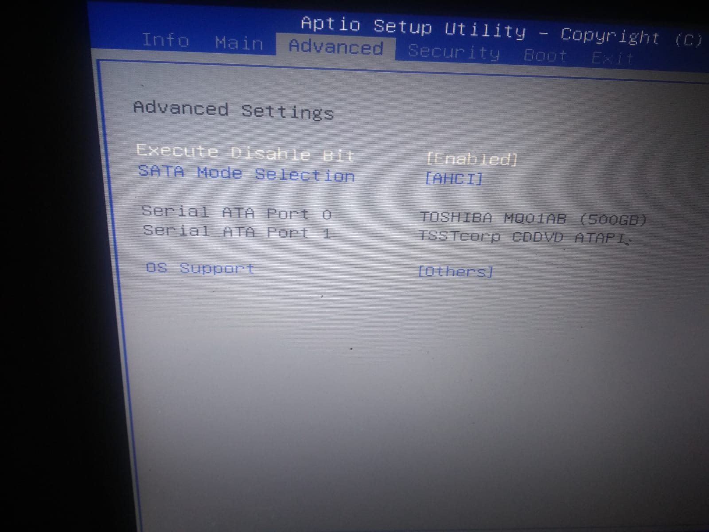
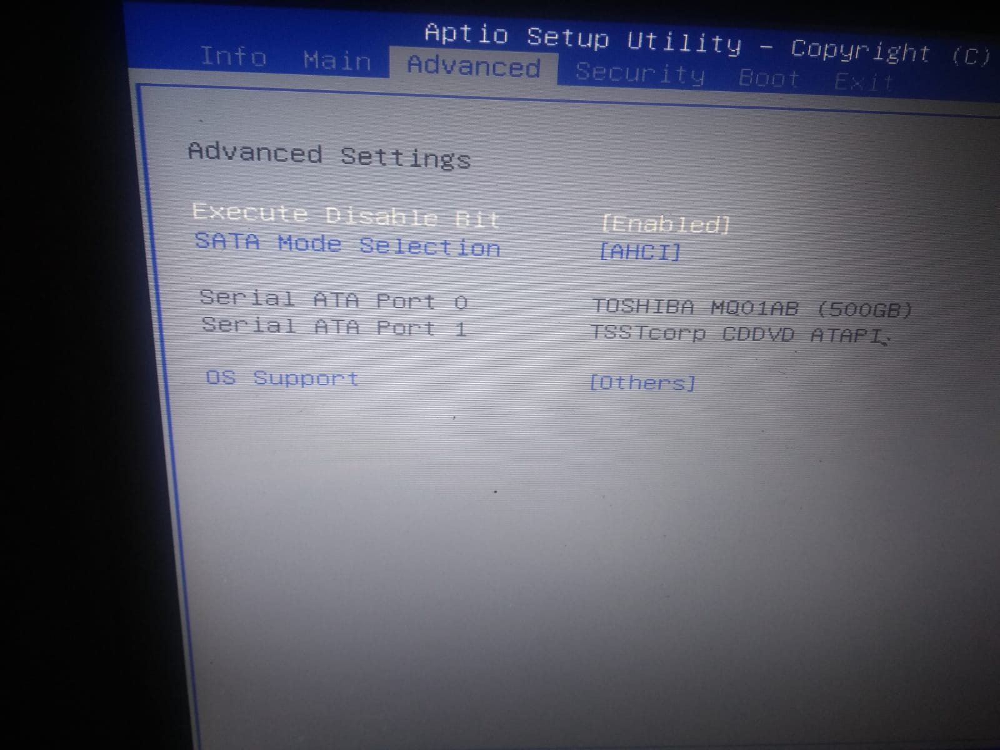
 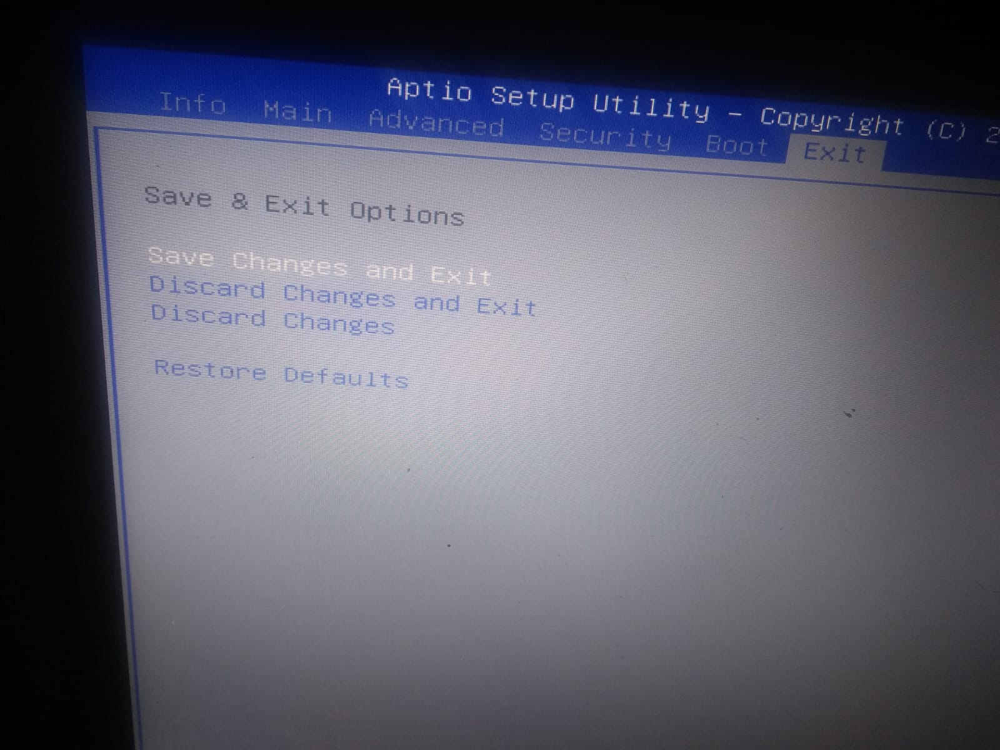
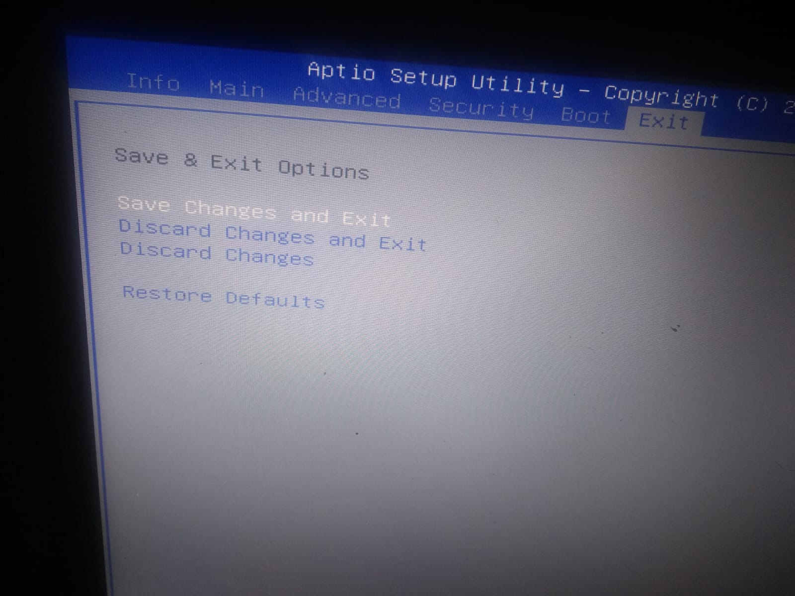
Veja Tambem sobre;